Station · 28 Sep: this morning's zoom and fan work merged onto the live Station, and rotation now happens inside the slot
Branch station/merge-zoom-20260928, pushed, not deployed. It is today's live Station (bca97fa), plus this morning's shorter first views, the rewritten lens rule, the Geiger chip in the top right and the full RSI fan. It keeps all three of this morning's live fixes exactly. On top of that, rotating slots now change names inside their own pane.
In one minute
Rotation inside the slot. The pages rotate as before: the same pages, the same order, 33 seconds each. What's new is that on a page with rotating slots, those slots change names while you watch. Every 11 seconds (a third of the page's time on screen) the next name loads quietly behind the current chart and fades in over about a second, once it has drawn. You never see an empty pane. Each rotating slot carries a small ↻ 2/5 tag next to its price: "name 2 of the 5 this slot cycles through". A fixed slot has no tag.
The merge. The zoom/fan branch landed on today's live Station with one small overlap, which I resolved by keeping both sides. The live fixes are unchanged: the lens reads 04:00–20:00, a lens isn't called STALE before today's first bar can exist, and both of your Equalizer saves are accepted.
Lens rule with the denser 04:00–20:00 candles. I checked 48 lenses on 8-chart 3-day pages, daily pages, 2-chart pages, at phone width and zoomed out. 47 stay clear of the newest part of the line, the ticker badge, the Geiger chip and the price line. One crosses the price line: VST on TARGETS · DAY, the same chart as this morning, because it is filled edge to edge.
Futures depth. ES/NQ keep only about a month of hourly bars because every refresh re-downloads 30 days and overwrites the stored copy. A 6-month backfill is small (about 28 FMP requests, under a minute). But it only sticks if the refresh is first changed to keep older bars. Details in section 4. Nothing was run.
Tests: 818 run, 800 pass. The 18 failures are exactly the 18 known ones; nothing new fails. 8 new checks were added.
1 · Rotation inside the slot
"This chart with QQQ and Bloom Energy is the one that rotates between the watched ones. Not bad. But we should make it within the slot — within the slot, switch between them… a very simple, soft, flowy experience; I don't have to maintain it." · "I need some visual reminder of which charts rotate."
What you see. On INTRADAY · 1H, the first chart swaps between SPY and QQQ (in market hours; ES and NQ outside them). The other three step through your eight targets, so the page might show SPY, GOOGL, NBIS and AVGO, and 11 seconds later QQQ, BE, AMZN and VST. The charts don't all change at once: each starts fading 0.7 seconds after the one before it, left to right. The timeframe, zoom, lens and oscillator stay the same; only the name changes.
Which slots rotate, and how many names each one cycles through:
Page
Rotating slots
Tag reads
INTRADAY · 30M (2 charts)
leader (SPY↔QQQ or ES↔NQ) · one target slot through all 8 targets
↻ 1/2 · ↻ 1/8 … 8/8
INTRADAY · 1H (4 charts)
leader · three target slots, each through all 8 (never two the same at once)
↻ 1/2 · ↻ k/8
INTRADAY · 4H (6 charts)
SPY+QQQ fixed · four target slots alternating between two halves of the list
↻ 1/2 · 2/2
SECTORS (8 charts)
your six fixed · slots 7–8 through XLP, XLV, XLU, XLRE, XLB
↻ k/5
MACRO · 4H (4 charts)
three slots between VIX/CL/10Y and DXY/gold/BTC · PCC fixed
↻ 1/2 · 2/2
Every other page has no rotating slot and no tag. The names in each slot are the same windows the pages already used between visits; they are simply reached while you're looking now, not only on the next lap.
You don't have to manage it. It runs whenever such a page is on screen, including when the page rotation is paused. It holds a chart for you when:
the pointer is over that chart;
you touched, scrolled or zoomed that chart in the last 20 seconds;
the Station tab is hidden.
Hovering the ↻ tag lists the names that slot cycles through.
The lap is unchanged: 23 pages by day and 17 by night, at 33 seconds each (20 s → a step every 8 s; 60 s → every 20 s).
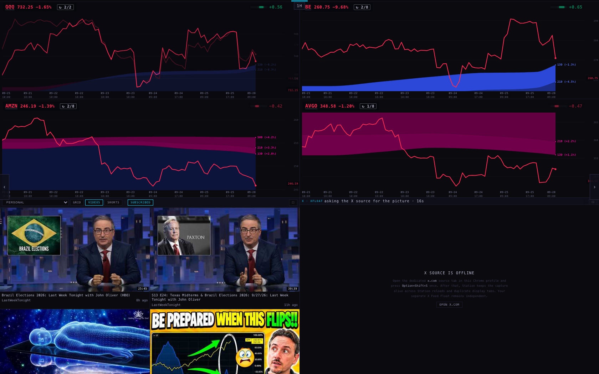
INTRADAY · 1H caught mid-fade (live, ~10:55 ET). Top left: QQQ fading in over SPY (72% through; SPY's line is still faintly visible). BE and AMZN are already on 2/8. AVGO (bottom right) is still 1/8 because it starts 0.7 s later. Every rotating chart has its ↻ tag.
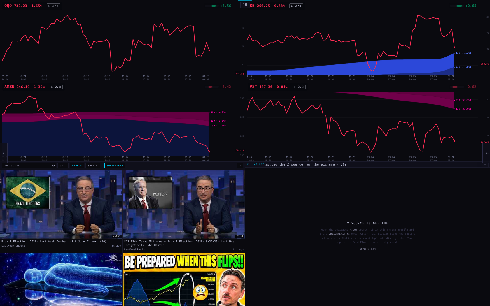
Four seconds later: QQQ ↻ 2/2, BE ↻ 2/8, AMZN ↻ 2/8, VST ↻ 2/8. The QQQ + Bloom Energy pairing you described, inside the page's own slots.
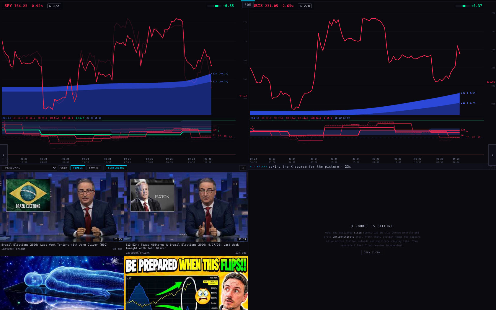
INTRADAY · 30M mid-fade: SPY coming in over QQQ (84%), shown with its RSI fan. The right-hand slot still shows NBIS ↻ 2/8.
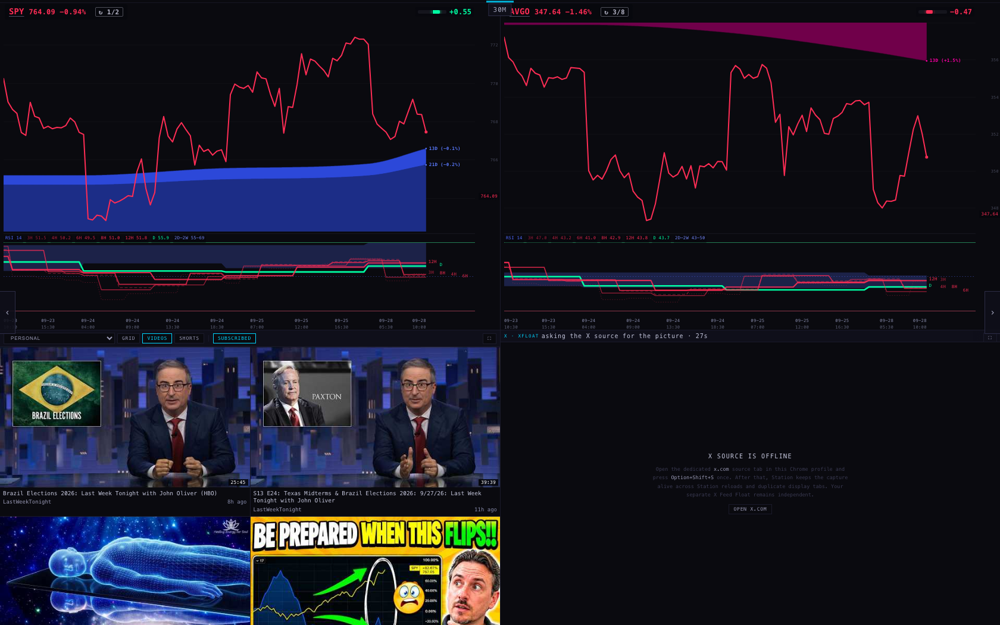
After the step: SPY ↻ 1/2 and AVGO ↻ 3/8, with the full fan and the 2D–2W cloud on both.
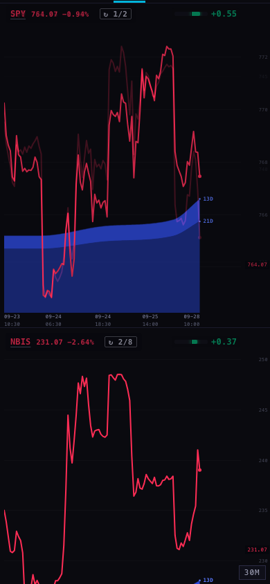
Phone (390), mid-fade: SPY coming in over QQQ; NBIS ↻ 2/8 below.
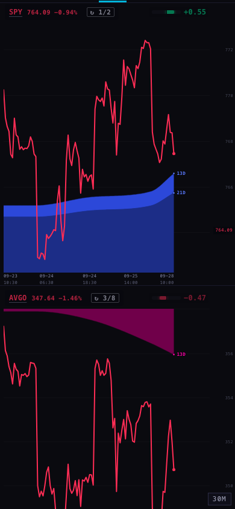
Phone, after the step.
2 · The merge, and the three live fixes it keeps
This morning's zoom/fan branch (b39e40d) brings the following onto today's live code:
shorter first views (daily 6 months, 3-day 1 year, weekly 2 years; you can still zoom out);
the rewritten lens rule;
the Geiger chip in the top right;
the full RSI fan with the slow 2D–2W cloud and the widths composed from bars already read.
It also keeps the rotating leader beside the targets, since your 09:55 correction had already undone the pairing change.
Only one file had edits from both sides: the lens. From the zoom branch it keeps "hold still while you zoom, then place once". From live it keeps the fix that the lens isn't called STALE before today's first bar can exist. The three live fixes, checked line by line against live:
Live fix
State on this branch
Lens reads 04:00–20:00 ("intraday applies since 4 a.m.")
The lens-hours file is byte-identical to live
Not STALE before today's first bar can exist (open + one bar + 20 min; futures and crypto on their own clock)
The rule's code is identical to live, and the lens still passes it its hours and bar size
Both Equalizer saves accepted (f6cf97b5… and d0da9a46…)
The provider file is byte-identical to live. Geiger chips show on every stock chart in the pictures, with no workaround (this morning's pictures needed one).
3 · The lens rule with 04:00–20:00 candles (denser)
For every lens drawn, the harness asked the page afterwards: is the lens in the newest fifth of the line? On the ticker badge (which now includes the ↻ tag)? On the Geiger chip? Crossing the price line?
Page
Width
Lenses
Clear on all four
Note
SECTORS (8 × 3-day, 4H lens)
1680
8
8
XLRE's lens says STALE: see "what could be wrong"
AI 1 · CHIPS (8 × 3-day)
1680
8
8
TARGETS · DAY (8 × daily, 30M lens)
1680
8
7
VST crosses the price line (filled edge to edge; same as this morning)
OTHER INDEXES · DAY (6 × daily)
1680
6
6
SPY + QQQ (2 × 3-day, fan)
1680
2
2
SPY + QQQ · DAY in session / as ES+NQ out of session
1680
4
4
SPY + QQQ · DAY zoomed out 6 notches
1680
2
2
Placed once after the zoom settled
SECTORS, TARGETS · DAY, SPY+QQQ in/out
390
8
8
Total
48
47
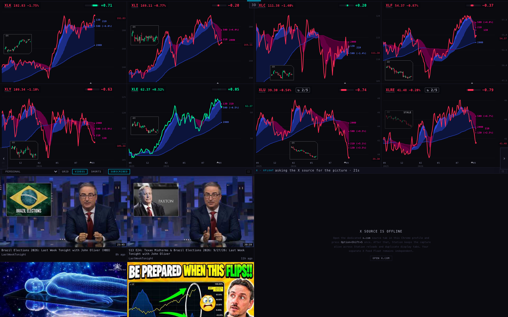
SECTORS · 3-day, 8 charts: Geiger chips top right, 4H lenses in the darkest open space. XLU and XLRE (slots 7–8) carry ↻ 2/5. XLRE's lens head reads STALE (it has no pre-market bar today; see below).
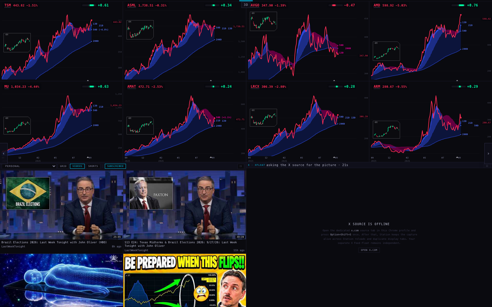
AI 1 · CHIPS: eight 3-day charts, all eight lenses clear.
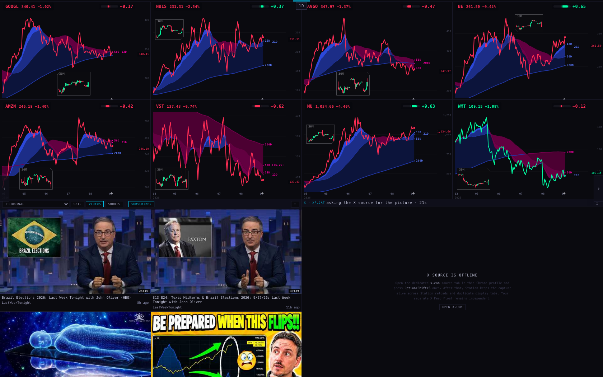
TARGETS · DAY: 6 months per chart. The 30M lenses now hold 04:00–20:00 candles. VST's lens (bottom row, second) touches the line.
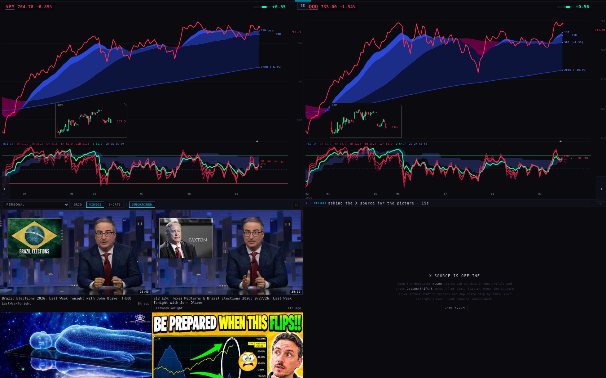
SPY + QQQ · DAY in session (live ~10:50 ET): SPY and QQQ, 30M lens, full fan and cloud, Geiger chips.
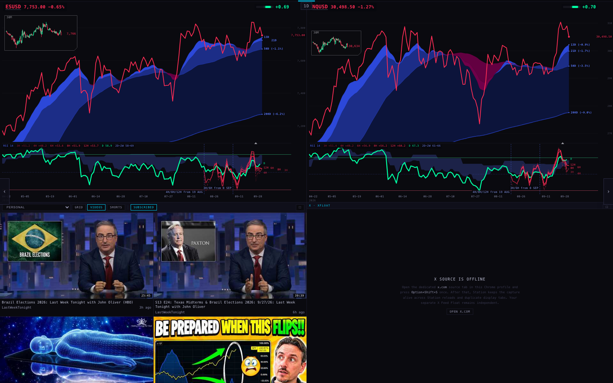
The same page with the clock set to 06:00 ET: it switches to ES + NQ. The prices are this morning's live ones. Dotted marks show where the futures' intraday lines begin ("4H/8H/12H from 19 Aug", "3H/6H from 8 Sep"); that is section 4.
Zoomed out: six wheel notches on SPY; both charts widen together to the full 11½ months (from 13 Oct 2025). The lens re-placed once, and the fan and cloud run across the whole width.
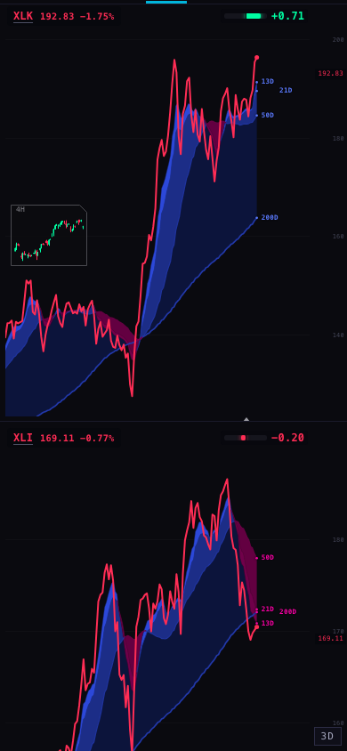
Phone · SECTORS
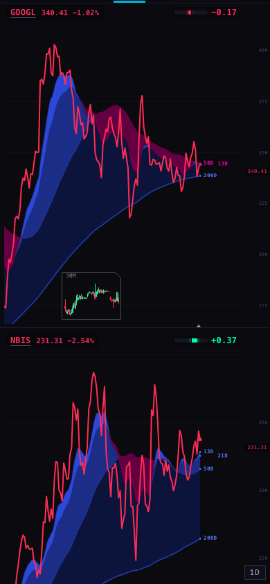
Phone · TARGETS · DAY
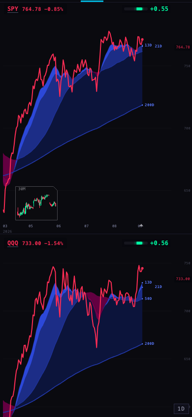
Phone · SPY+QQQ in session
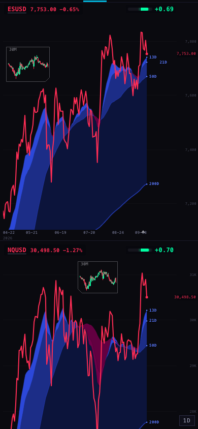
Phone · ES+NQ out of session
4 · Futures fan depth: what a 6-month backfill would take (not run)
Measured today from the chart API (read-only):
ES and NQ width
Bars
From
Where it comes from
1h
486 / 487
30 Aug
FMP hourly, last 30 days
3h · 6h · 12h
164 · 82 · 45
30 Aug
Built from that same hourly series
4h
254
30 Jul
FMP 4-hour, last 60 days
8h
—
Not served; the Station builds it from 4h
Why only a month. The bar service refreshes ES/NQ every few minutes. Each refresh asks FMP for the last 30 days of hourly bars and replaces the stored series with that answer (services/rest-accel/fmp-macro-refresh.mjs, tail_days: 30). Anything older is thrown away on every run, so a backfill on its own would disappear within minutes.
What it would take:
Keep older bars on refresh (provider repo, about 30 lines plus tests): when writing an intraday series, read the stored one and keep its completed bars older than the new download. Where both have a bar, FMP's newer copy wins. This has to ship in the next bar-service image before step 3.
A one-off job script, scripts/backfill-fmp-intraday.mjs. For ESUSD and NQUSD, 1h and 4h, it asks FMP in 30-day windows going back 183 days: 7 windows × 2 widths × 2 symbols = 28 FMP requests. It joins the windows and writes the same stored object the refresh writes. Windows avoid any per-request span limit.
Run it on Fly (the coordinator, not this Mac): fly machine run <bar-service image> --rm -a scintilla-massive-stocks-batch -- node scripts/backfill-fmp-intraday.mjs --symbols ESUSD,NQUSD --frames 60,240 --days 183
Size and time. 30 days of ES hourly was a 69.9 KB answer, so 6 months is about 3,000 hourly bars (~420 KB raw, well under 100 KB compressed) per symbol. The run takes under a minute. After it, 3h/6h/12h (built from 1h) and 8h (built by the Station from 4h) would reach back 6 months too, and the "from 19 Aug / from 8 Sep" marks would move to the left edge of a daily chart.
Not verified: whether FMP serves 6 months of intraday futures bars (the first window will show it), and how long the chart API keeps its copy of a series before it sees the new one. I ran no Fly command and made no FMP request.
What could be wrong
A lens that says STALE on a quiet pre-market name. XLRE had no 04:00–08:00 bar today (nothing traded pre-market). Under the kept rule, a 4H lens is due at 08:20, so it reads STALE until the 08:00 bar lands at about 12:00. It's the rule doing what it says, but for thin names it's a false alarm (decision 2).
Rotation timing on a slow chart API. A name that hasn't drawn within 9 seconds is skipped and the slot keeps its chart until the next step. On a very slow morning a slot could stay on one name for a step or two. It will never show an empty pane.
A held slot can briefly repeat a name. While a slot is held (pointer over it), the others keep moving, so it can show the same name as a neighbour for one step.
Phone: no fan under SPY/QQQ. At 390 wide the two-chart pages ask for the fan but don't draw it. Today's live code does the same (I checked it the same way), so the merge didn't cause it; it hasn't been fixed either.
Out-of-session pictures set the page clock to 06:00 ET, but the prices are this morning's live ones.
What I did not do
No deploy, no Fly or Supabase command, no FMP request, no backfill. The branch is pushed only.
The XLRE-type STALE was not changed: you asked for the three fixes to be kept exactly.
The phone fan was not fixed (it's older than today).
I didn't watch a full 13-minute lap in a browser. The lap order is checked by the tests, and rotation was watched on the 1H and 30M pages.
Decisions for you
Should "pause" also freeze the rotating slots? Right now pause stops the pages, but the slots keep cycling (pointer or touch holds a chart). Recommendation: keep it as is. It's the "I don't have to maintain it" behaviour, and hovering a chart holds it.
STALE on quiet pre-market names. Keep drawing 04:00–20:00 candles, but judge "today's bar is late" from the regular open (for a 30M lens STALE only after 10:20, for a 4H lens after 12:20). Recommendation: yes. It removes false STALEs like XLRE's without hiding real gaps for long.
Futures 6-month backfill. First the refresh change (keep older bars), then the one-off 28-request job on Fly. Recommendation: yes, in that order. It makes the ES/NQ fan complete across a daily chart.
Harness (headless only, every browser closed when done): harness/shot.mjs and rig.mjs (with --midrot=1 for the mid-fade shots), and frames.mjs for the phone comparison with live code. The chart API was reached through a local read-only relay carrying the scintillahub.ai origin (non-GET requests were blocked); the per-page readouts are the *.json files beside them. Tests: node --test tests/ → 818 run, 800 pass, 18 fail (the 18 known), 0 new. The new suite is tests/station-slot-rotation-20260928.test.mjs.